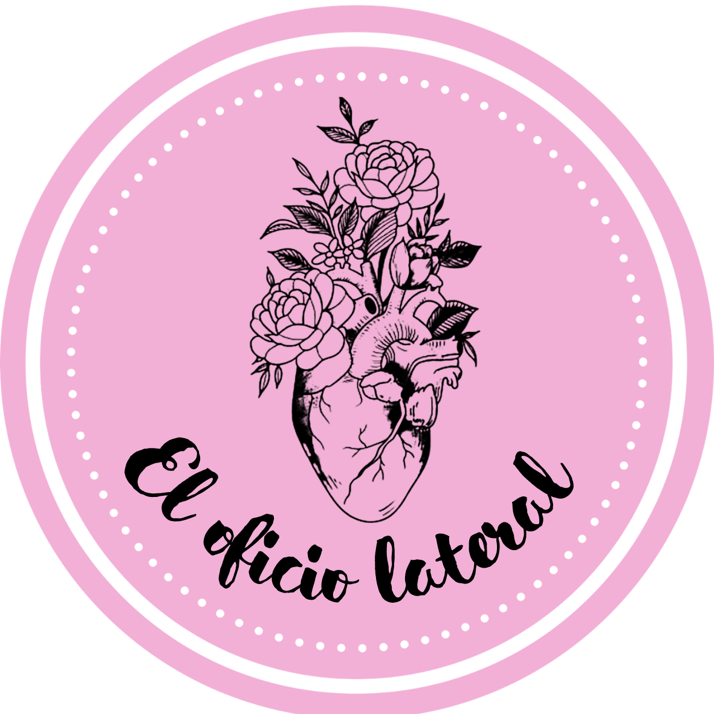
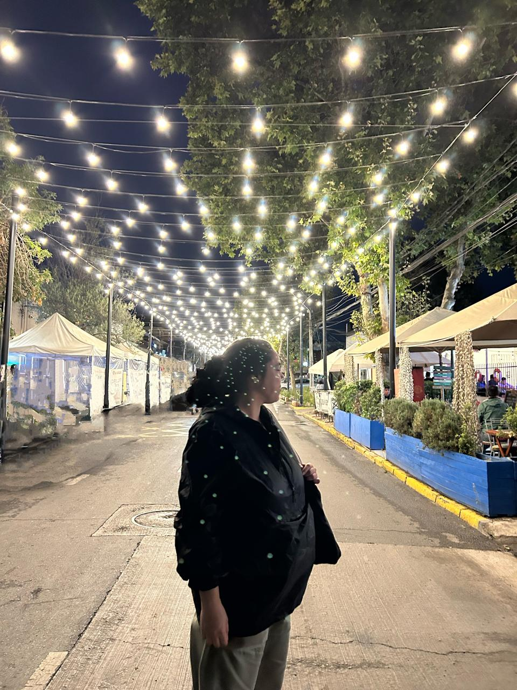

El Oficio Lateralpor Gabriela Mistral, 1933
«En varias partes algunas gentes me han preguntado
sobre mi vida y mi reparto en dos oficios
que no son nada gemelos sino opuestos».
Ver talleres«Una especie de fatalidad pesa sobre maestros y profesores [...]
Ellos seguirán siendo los grandes afligidos dentro del presupuesto graso de las naciones ricas y de los erarios más o menos holgados; los sueldos suculentos serán siempre absorbidos por el Ejército y la Armada, la alta magistratura y la plana mayor de la política. Afligidos dije y no plañideros, pues cada instructor parece llamarse «el Sopórtalo-todo». [...]
La invención del oficio lateral trae en tal momento la salvación. Ella busca quebrar la raya demasiado geométrica de la pedagogía estática, dándole un disparadero hacia direcciones inéditas y vitales. El pobre maestro debe salvarse a sí mismo y salvar a los niños dentro de su propia salvación. Llegue, pues, el oficio segundón, a la hora de la crisis, cuando el tedio ya aparece en su fea desnudez; venga cualquiera cosa nueva y fértil, y ojalá ella sea pariente de la creación, a fin de que nos saque del atolladero.»
El Oficio Lateral nace desde una profunda desesperación por encontrar sentido en la labor docente. Tal como pronosticó Gabriela y potenciado por las revueltas populares y la pandemia, me vi en la obligación de entregarme a un segundo oficio como acción intencional de autocuidado y de resistencia ante un sistema que exige de los docentes la anulación total en pos de un bien común.
Gabriela Mistral solía decir que lo que más urgentemente necesitaba la educación eran "profesores felices", así que después de 6 semanas de licencia por Burnout en 2021, decidí que era momento de atreverme a compartir mis labores, y hablar de salud mental, autocuidado y exigencia, política, filosofía y arte en una cruzada por humanizar mi profesión y mi propia experiencia docente — mientras tenía jefes que me llamaban a descansar en la idea de "ser recordados como héroes" después de la pandemia.
Al avanzar los años, el proyecto me permitió conocer personas excepcionales que trabajaban en la misma dirección, impartir talleres que nacían desde mis propias inquietudes en Von Refugio y tener conversaciones importantísimas con estudiantes y exalumnas. En 2025, cuando me despidieron de mi trabajo, fue el motor que me permitió reinventarme y seguir. Así El oficio lateral dejó de ser lateral — algo que quizás Mistral también presagió cuando dijo "En el descubrimiento del segundo oficio había comenzado la fiesta de mi vida".


Soy licenciada en Letras y profesora de Lengua y Literatura de Enseñanza Media. Enseño principalmente a mujeres y chiques trans hace más de 10 años. También hago clases particulares de lenguaje, inglés y francés, así como otros talleres presenciales y online.
Escogí mi profesión porque quería algo que tuviera sentido para mí, que pudiese impactar en el entorno y que me permitiera desarrollar mi interés por las letras y el cine. Comencé con los talleres porque hacen posible la creación de un espacio con todas las bondades de las clases sin todas las restricciones que implica la dinámica de la escuela.
Espero que mis estudiantes no solo aprendan contenidos o habilidades académicas — busco ayudarles a encontrar en el arte un refugio emocional e intelectual y un incentivo para desarrollar el pensamiento crítico.
¿Cómo imaginaban el futuro las escritoras en el siglo veinte?
3 sesiones de lectura colectiva, diálogo audiovisual y escritura creativa en torno a Margaret Atwood, Octavia E. Butler y Úrsula K. Le Guin.
Inscribirme¿Tienes problemas de ansiedad, disposición o estrategia para enfrentar la lectura?
Laboratorio de lectura estratégica para estudiantes de IV medio en grupos reducidos. A diferencia de un preuniversitario tradicional, el trabajo se centra tanto en las habilidades de comprensión como en la confianza académica y el bienestar emocional, con acompañamiento personalizado y seguimiento constante.
InscribirmePróximamente.
Lecturas, recursos y archivos para descargar.
Esta sección es exclusiva para la comunidad de El Oficio Lateral.
Próximamente.
¿Quieres inscribirte a un taller o tienes una consulta?
EscribirmeTambién en Instagram: @eloficiolateral